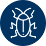

DESAFIOS PROPOSTOS
Os principais desafios temáticos identificados junto ao setor produtivo são apresentados abaixo. As soluções apresentadas pelos candidatos devem buscar solucionar essas dores, tendo como foco ao menos uma das culturas: soja, milho, feijão, algodão, trigo e citros.

Gestão e Monitoramento de Recursos Hídricos
- Tecnologias e automação de sistemas irrigados por meio de soluções que visam melhorar a eficiência e eficácia na utilização dos recursos hídricos.
- Novas tecnologias relacionadas ao tema deste item.

Monitoramento de Pragas e Doenças
- Sistemas e/ou novas tecnologias que contribuam para a melhoria da detecção e monitoramento de pragas e doenças, utilizando ou não, inteligência preditiva.
Bioprodutos
- Desenvolvimento de bioinsumos de eficiência aumentada para o incremento da produção, da qualidade da produção e/ou proteção de plantas contra estresses bióticos e abióticos, tais como agentes de controle biológico; bioestimulantes; biofertilizantes; condicionadores de ambientes; entre outros.

Máquinas e Implementos Agrícolas
- Interações entre máquina-solo-planta que busquem sistemas produtivos mais eficientes.
- Soluções que contribuam para a otimização e melhoria no sistema de colheita de feijão.
- Novas tecnologias relacionadas ao tema deste item.